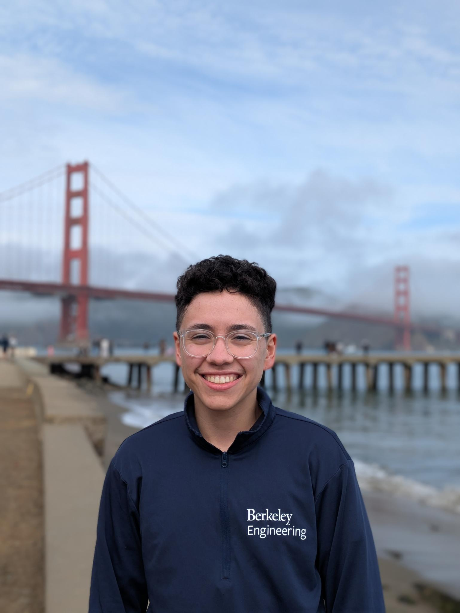

Micah Murray
AboutMe: Beginning 4th Year PhD @ UC Berkeley with split loyalties to both the NetSys and Sky labs. I primarily work in distributed systems and networking, with other intersts in security, privacy, and social computing.
Before Berkeley, I received my Bachelor of Science in Computer Science from Stanford University.
Advisors: I have the privilege of being co-advised by Prof. Natacha Crooks and Prof. Scott Shenker at UC Berkeley. When I started my foray into systems research in undergrad, I was fortunate to work with and receive mentorship from Prof. Deepti Raghavan, Prof. Phil Levis, Dr. Irene Zhang, and Prof. Matei Zaharia. I am also lucky to have worked with Prof. Kayvon Fatahalian and Prof. Dustin Schroeder.
And I wouldn't be where I am today without the mentorship I received from Prof. Ross Maciejewski.
Publications and Papers
Questions/comments/complaints/insights? Let's talk! Email me!
-
Designing a Datacenter-wide Distributed Shared Log
Micah Murray, Wen Zhang, Aisha Mushtaq, Natacha Crooks, Aurojit Panda, Scott Shenker
The 20th Workshop on Hot Topics in Operating Systems (HotOS XX) (HotOS 2025, to appear)
[Workshop]
[Paper]
[Slides PDF]
[Slides ODP]
-
Scrooge: Enabling Replicated State Machines to Communicate Efficiently
Reginald Frank, Micah Murray, Suyash Gupta, Qibao Xu, Chawinphat Tankuranand, Junseo Yoo, Natacha Crooks, Manos Kapritsos
19th USENIX Symposium on Operating Systems Design and Implementation (OSDI 2025, to appear)
[Conference]
-
Cornflakes: Zero-Copy Serialization for Microsecond-Scale Networking
Deepti Raghavan, Shreya Ravi, Gina Yuan, Pratiksha Thaker, Sanjari Srivastava, Micah Murray, Pedro Henrique Penna, Amy Ousterhout, Philip Levis, Matei Zaharia, Irene Zhang
The 29th ACM Symposium on Operating Systems Principles (SOSP 2023)
[Proceedings]
[Paper]
-
Analysis of Faces in a Decade of US Cable TV News
James Hong, Will Crichton, Haotian Zhang, Daniel Y. Fu, Jacob Ritchie, Jeremy Barenholtz, Ben Hannel, Xinwei Yao, Micah Murray, Geraldine Moriba, Maneesh Agrawala, Kayvon Fatahalian
27th ACM SIGKDD Conference on Knowledge Discovery & Data Mining (SIGKDD 2021)
[Proceedings]
[Paper]
Honors & Awards
- 2024 National Science Foundation Graduate Research Fellowship
- 2022-2023 UC Berkeley Chancellor's Fellow
- 2022 Berkeley EECS Excellence Award
- 2019 International Collegiate Penetration Testing Competition (Team: 1st place)
- 2019 National Collegiate Cyber Defense Competition (Team: 5th place)
- 2019 Western Regional Collegiate Cyber Defense Competition (Team: 1st place)
Teaching & Service
- Course Assistant for CS 162 (Operating Systems and System Programming), UC Berkeley, Fall 2023
My university email address is
micahmurray@berkeley.edu. If you are
considering sending me an email, please do so!
Other
You can find a variety of projects on my
Codeberg and
GitHub profile.
My dotfiles can be found here.
I don't really do social media, but I do have a mastodon.
Full credit for this website design goes to Matthew Sotoudeh
This page was last updated on 9/22/2025.